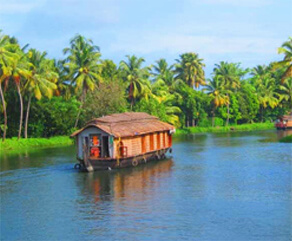
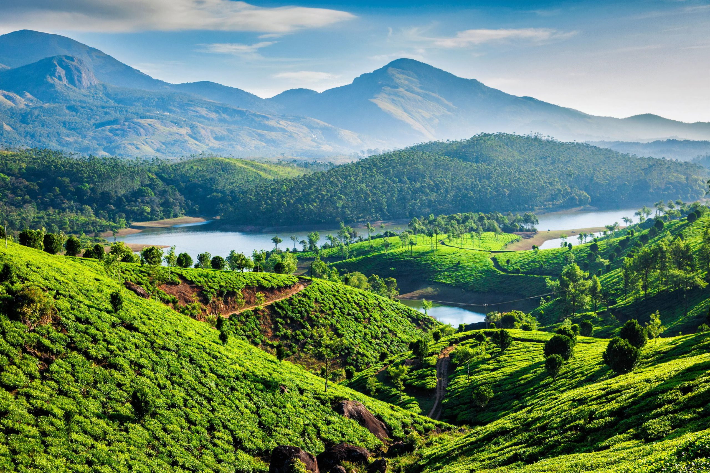
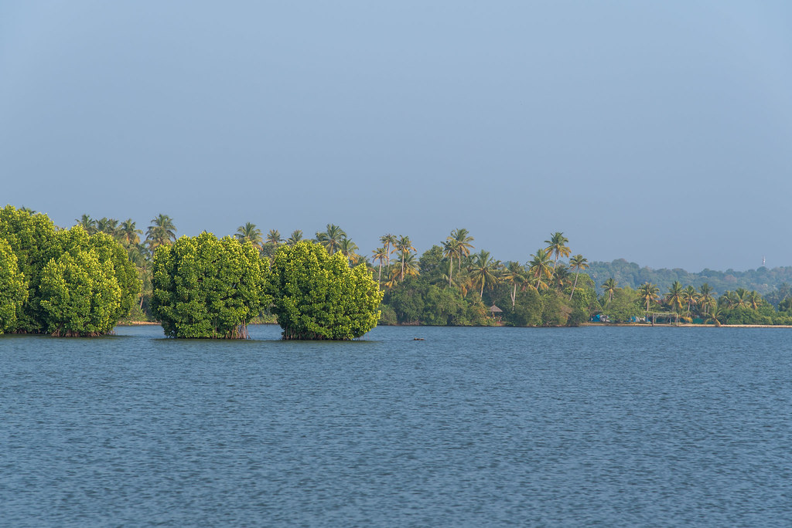
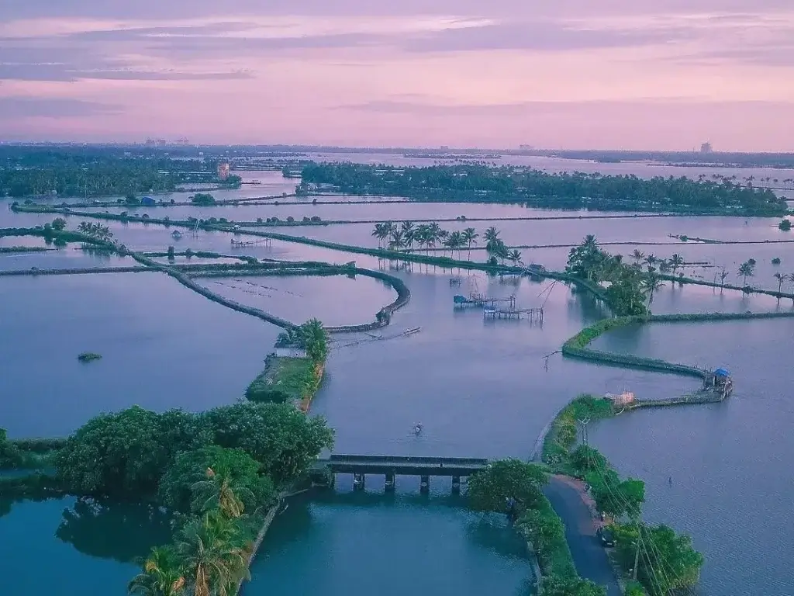
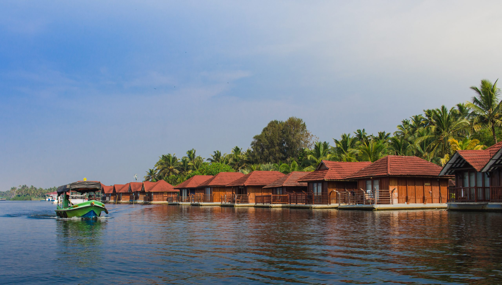

Ashtamudi Lake

Nearest Domestic Airport:
Thrivandrum International Airport
(50 km away)
Nearest Railway Station: Kollam
Junction
Often known as the gateway to the backwaters, it is the point where the brackish water starts showing its true colors. Located in the Kollam district of Kerala, Ashtamudi Lake is one of the largest freshwater lakes in India. This palm-shaped lake has recently emerged as one of the most visited regions in Kerala. Ashtamudi Lake is the main source of water for many other water bodies in Kerala. Amidst the lake, there are 3 prominent islands namely Munroe Island, Chavara Island and Thekkumbhagom Island.
For the tourists who want to catch sight of unique avian animals, then they should go for a cruise ride in Kerala, on the bank of Ashtamudi lake. While passing through the houseboats, one can see many varieties of birds and herbal trees stationed on the multiple islands within the backwaters. On the bank of Ashtamudi lake, the unique traditional ferries called Kettuvalloms is being made.
Vembanad Backwaters
One can see a million of lilies and lotuses sprouting on this stretch which simply looks like a queen's pearl necklace. The famous snake boat competition is organized here during Onam. It is indeed amazing to watch oarsmen, at least a hundred of them in one boat, slice their way through the waters to the fast rhythm of their own full throated singing. On the boulevard of this stretch, tourists can spot some magnificent birds at the Kumarakom bird sanctuary. The bird sanctuary is an ornithologist's fantasy, with a significant number of rare breeds gathered in one small area. Within the backwaters, there are many islands. Among the islands, Wellingdon Island deserves special mention as it houses the Port of Cochin and the largest naval presence in India: the Southern Naval Command.
Nearest Domestic Airport:
Kozhikode (48 km away)
Nearest Railway Station:
Kozhikode (46 km away)
Valiyaparamba in Kasargod

Nearest Domestic Airport:
Mangalore International Airport (50km)
(50 km away)
Nearest Railway Station: Kasaragod
railway Station (46 kms away)
Junction
Valiyaparamba is a hidden gem nestled in the Kasaragod district of Kerala, India. Situated between the Arabian Sea and the Western Ghats, this offbeat backwater destination offers a serene escape from the hustle and bustle of city life.
Location-wise, Valiyaparamba is located about 30 kilometers from Kasaragod town and can be easily reached by road. The nearest airport is Mangalore International Airport, which is approximately 75 kilometers away. One of the main attractions of Valiyaparamba is its backwater cruises. Travelers can embark on a leisurely houseboat journey along the meandering waterways, soaking in the scenic beauty of the surroundings Fishing is another popular activity in Valiyaparamba. Visitors can try their hand at traditional methods of fishing or simply watch the local fishermen cast their nets in the backwaters. For nature lovers, Valiyaparamba offers plenty of opportunities for birdwatching and wildlife spotting. The Kerala backwaters are home to a diverse range of bird species Aside from water-based activities, Valiyaparamba also has cultural attractions worth exploring. Visitors can visit the nearby Bekal Fort, one of the largest and best-preserved forts in Kerala.
Kavvayi in Kannur
Kavvayi is a picturesque backwater destination situated in the Kannur district of Kerala, India. It is located near Payyanur,Kavvayi is renowned for its serene backwaters, lush greenery, and tranquil ambiance, making it an ideal retreat for travelers seeking a peaceful escape
The highlight of a visit to Kavvayi is exploring its backwaters on a traditional houseboat or a country boat. For those seeking a more adventurous experience, canoeing and kayaking are popular activities in Kavvayi Take a break from the water and explore the charming villages that dot the banks of the backwaters. Kavvayi is located close to several other attractions worth exploring, including the historic town of Payyanur, the ancient Muthappan Temple, and the scenic Ezhimala Hill
Nearest Domestic Airport:
Kannur Railway station (48 km away)
Nearest Railway Station:
Kozhikode (46 km away)
Munroe Island in Kollam

Nearest Domestic Airport:
Trivandrum International Airport (80 km away)
(50 km away)
Nearest Railway Station: Kollam
Junction
railway Station (46 kms away)
Munroe Island, also known as Mundrothuruthu, is a picturesque island located at the confluence of Ashtamudi Lake and the Kallada River in Kollam district, Kerala, India. Named after Colonel John Munroe, a British resident of erstwhile Travancore, this tranquil island is renowned for its serene backwaters, lush greenery, and rich biodiversity.
Munroe Island serves as a gateway to explore other attractions in the region, including backwater destinations of Ashtamudi Lake and Asthamudi Wetland. Coir-making is a traditional occupation in Munroe Island, and visitors can visit local coir-making units to learn about the process of extracting coir fiber from coconut husks. Munroe Island is home to several quaint villages where visitors can experience the traditional way of life in Kerala. Guided village tours offer insights into local customs, culture, and handicrafts.
Nileshwar in Kasargod
Nileshwar is strategically positioned along the Malabar Coast,Experience the charm of Kerala backwaters with a houseboat stay on the Tejaswini River.
Travelers can embark on a leisurely boat ride along the Tejaswini River, soaking in the tranquil ambiance and observing the local life along the riverbanks. Nileshwar is renowned for its pristine beaches, characterized by golden sands, swaying palm trees, and blue waters. The iconic Nileshwar Beach and nearby spots like Valiyaparamba Beach offer idyllic settings for strolls The Nileshwar Rajarajeswara Temple, dedicated to Lord Shiva, is a prominent landmark near the Kerala backwaters of Nileshwar. Relax and rejuvenate your mind, body, and soul with authentic Ayurvedic treatments and therapies offered in Nileshwar.
Nearest Domestic Airport:
Mangalore International Airport (80 km away)
Nearest Railway Station:Nileshwar
railway station
Kozhikode (46 km away)
Kadamakkudy in Ernakulum

Nearest Domestic Airport:
Cochin International Airport,
(50 km away)
Nearest Railway Station: Ernakulam
Junction
railway Station (46 kms away)
Kadamakkudy is a group of islands located near Kochi, in the Ernakulam district of Kerala, India. Situated amidst the serene backwaters of Kerala, Kadamakkudy offers a tranquil escape from the urban hustle and bustle.
One of the most popular activities in Kadamakkudy is exploring its tranquil backwaters on a traditional houseboat or a country canoe. Explore the rustic charm and local way of life in Kadamakkudy by taking village walks or cycling tours through its scenic countryside. Delve into the flavors of Kerala cuisine with cooking classes and culinary experiences offered in Kadamakkudy
Kuttanad in Alappuzha
Kuttanad, often referred to as the “Rice Bowl of Kerala,” is a unique and picturesque region located in the Alappuzha district of Kerala, India. Kuttanad is situated in the southern part of Kerala, primarily in the Alappuzha district, with parts extending into Kottayam and Pathanamthitta districts. It is bordered by the Vembanad Lake to the west and the Alappuzha town to the east. The region is easily accessible by road from major cities like Kochi and Thiruvananthapuram.
Explore the tranquil backwaters of Kuttanad on a traditional houseboat cruise. Discover the agricultural heritage of Kuttanad with a guided tour of its expansive paddy fields. Visitors can stroll through the verdant fields, interact with local farmers, and learn about the cultivation of rice, coconut, and other crops. Experience the backwaters of Kuttanad up close with adventurous canoeing and kayaking expeditions. Embark on birdwatching excursions along the backwaters and wetlands of Kuttanad to spot migratory birds, waterfowl, and resident species in their natural habitats.
Nearest Domestic Airport:
Cochin International Airport (85 km away)
Nearest Railway Station:Alappuzha
Railway Station
(46 km away)

Poovar in Trivandrum

Nearest Domestic Airport:
Trivandrum International Airport
(35 km away)
Nearest Railway Station:
Thiruvananthapuram
railway Station (46 kms away)
Poovar is situated at the southernmost tip of the Trivandrum district, bordered by the Arabian Sea on one side and the Neyyar River on the other.
ne of the most popular activities in Poovar is exploring its tranquil backwaters on a traditional Kerala houseboat. Poovar is blessed with pristine golden beaches that offer an ideal setting for relaxation and rejuvenation. Visitors can explore these dense mangrove forests on guided boat tours, witnessing the rich biodiversity of the region. Poovar is renowned for its Ayurvedic wellness retreats, where visitors can indulge in rejuvenating spa treatments and holistic therapies.
Thanneermukkom in Alappuzha
Thanneermukkom is situated in the Alappuzha district of Kerala, known as the “Venice of the East” for its intricate network of backwaters.
One of the most distinctive features of Thanneermukkom is the Thanneermukkom Bund, a barrier constructed across the Vembanad Lake to prevent saltwater intrusion into the backwaters. Visitors can walk or cycle along the bund Visitors can explore the lush greenery surrounding the backwaters and spot birds such as egrets, herons, kingfishers, and migratory birds like Siberian cranes. Immerse yourself in the rustic charm of rural Kerala by taking a stroll through the quaint villages surrounding Thanneermukkom. Experience the ultimate backwater experience by staying overnight on a traditional Kerala houseboat in Thanneermukkom
Nearest Domestic Airport:
Cochin International Airport (85 km away)
Nearest Railway Station:Alappuzha
Railway Station
(46 km away)